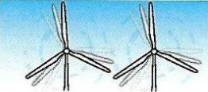
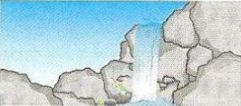
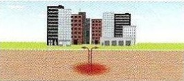

Sources des énergies renouvelables et leur utilisation
Les énergies renouvelables proviennent de ressources naturelles qui se renouvellent en permanence. Elles sont utilisées pour produire de l’électricité, de la chaleur et parfois des carburants propres.
Principales sources d’énergies renouvelables
Le tableau suivant présente quelques sources d’énergies renouvelables avec leurs principales utilisations.
| Source d’énergie | Type d’énergie | Utilisations |
|---|---|---|
|
Soleil
|
Énergie solaire |
|
|
Vent
 |
Énergie éolienne |
|
|
Eau
 |
Énergie hydraulique |
|
|
Matières organiques
|
Biomasse |
|
|
Chaleur du sous-sol
 |
Énergie géothermique |
|
Pourquoi utiliser les énergies renouvelables ?
- Réduire les émissions de gaz à effet de serre
- Protéger les ressources naturelles
- Encourager le développement durable
- Renforcer l’indépendance énergétique
Les énergies renouvelables sont une solution importante pour répondre aux besoins énergétiques actuels tout en protégeant l’environnement.